After completing this lesson, you’ll be able to:
In this example, imagine you are a GIS technician working for a city planning department.
The team responsible for maintaining parks has a workspace that translates their data from the source MapInfo TAB format to Google KML. It also writes an XML metadata file to show who translated the data and when.
At the moment, they face two problems:
You have been assigned to help solve these problems. At least one of these requires creating user parameters to replace hard-coded values.
Start FME Workbench (2023.2 or later) and open the starting workspace.
The metadata part of the translation consists of the two transformers and an XML writer feature type.
The Sampler transformer ensures that only one record is written to the output metadata by discarding all but one feature, and the AttributeCreator creates a set of attributes to write to the metadata.
Check the parameters for each transformer in turn. These are FME parameters set by the workspace author and unavailable to the end-user. Here, for example, are the parameters for the Sampler transformer:

You can find these parameters in the Parmeter Editor window, the transformers' parameters dialog, and under the Transformers section of the Navigator window.
An FME parameter called Pretty Print controls the style of the XML file being written:
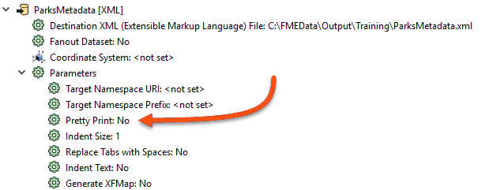
To ensure the output is always well-formatted, we should set this parameter to Yes - but we won't create a user parameter from it because we don't want the end-user to change it.
In the Navigator window, locate the XML writer, expand the parameters list, and locate the Pretty Print parameter. Double-click it.
In the dialog that opens, change the value to Yes and click OK to close the dialog.
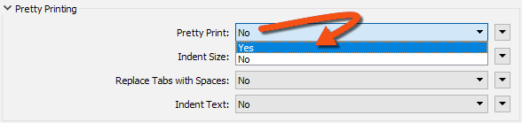
We have now - as a workspace author - changed an FME parameter.
The output schema has three variable attributes: username, user company (organization), and user email. We should create a user parameter for each to allow the end-user to enter that information.
Firstly, locate the User Parameters section of the Navigator window, right-click on it, and choose Manage User Parameters...:
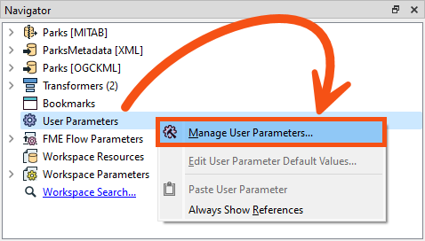
In the User Parameters for 'Main' dialog, click the green plus icon and select Text as the type of parameter to create:
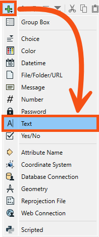
Fill out the section on the right as follows:
| Parameter Identifier | UserNameParam |
| Prompt | Enter your name: |
| Published | Enabled |
| Required | Disabled |
| Disable Attribute Assignment | Disabled |
Click OK to close the dialog and create the parameter, which then appears in the Navigator window.
The quickest way to create the other two required parameters (UserMailParam and UserCompanyParam) is to duplicate the UserNameParam parameter.
So, right-click on the UserNameParam parameter and choose the option to Duplicate:
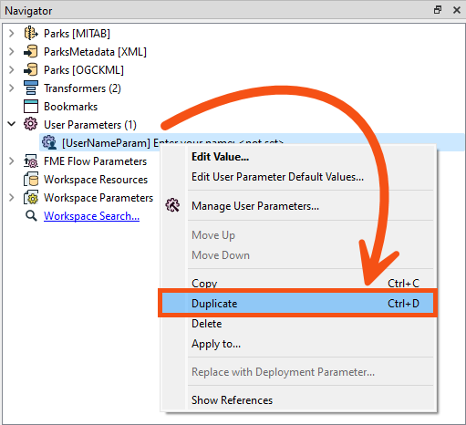
You can use the copy and paste buttons in the Parameter Manager to create duplicate parameters instead if you prefer.
Call the new parameter UserMailParam and set the prompt to “Enter your email address:”.
Repeat the duplication process to create a parameter called UserCompanyParam with the prompt "Enter your company name:".
When done, your Navigator window should look like this:
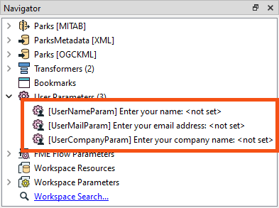
Each user parameter we've just defined provides values that need to go into attributes in the writer schema. There are several ways to extract the value for such a purpose, and we’ll use a different method for each parameter to illustrate the different methods.
So, firstly, double-click the AttributeCreator to open its parameters. This transformer is what currently creates the attributes for the output.
Click the Attribute Value field for the AuthorName attribute. Click on the drop-down arrow, then select User Parameter > UserNameParam.
Once done, the value field will change to a special icon and show the parameter that was chosen:
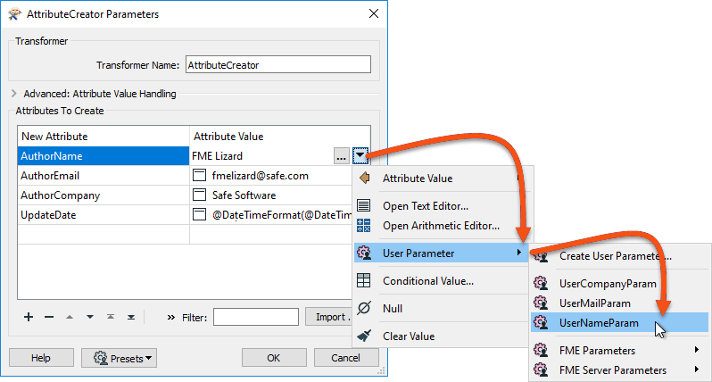
While here, click on the AuthorEmail and AuthorCompany fields and press the minus button to delete them. We will deal with these differently.
A second way to extract the value from a user parameter is with a ParameterFetcher transformer.
Place a ParameterFetcher transformer (after the AttributeCreator is fine). Inspect the parameters.
Select UserEmailParam as the parameter to fetch. Enter AuthorEmail as the name of the target attribute, then select UserCompanyParam and enter AuthorCompany as the target attribute:
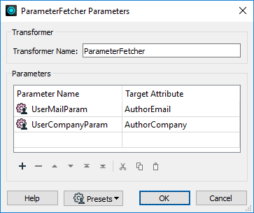
Did you notice that the list of parameters available includes many FME-related system parameters? These are particularly useful for use with FME Flow and for writing metadata, as we are here.
Locate the BuildNumber attribute on the ParksMetadata feature type. It's currently not receiving any values, indicated by a red arrow:
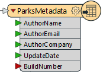
Let's fix that.
Open the AttributeCreator again and add an attribute called BuildNumber.
You could enter a fixed (constant) value in the Value column, but in our case, we’ll click on the drop-down arrow, select User Parameters, then FME Parameters, and then select FME_BUILD_NUM:
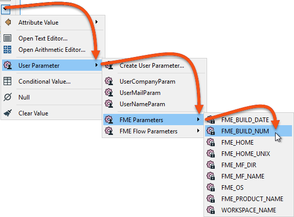
Click OK to close the dialog, and the feature type will highlight the attribute with a light red rightward-pointing arrow to show it has an attribute value set before being written.
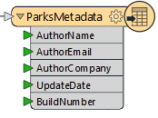
Save the workspace and then – as if you were the end-user – run it. Be sure to enable the Prompt for Parameters option on the toolbar first:
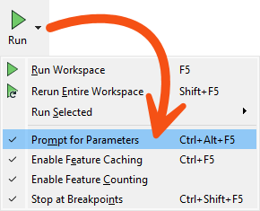
When prompted, enter your details into the fields that have been newly created; notice that the BuildNumber parameter we created isn't in the prompt. This is because it is an FME-specific private parameter that the user doesn't need to change:

Locate and open the XML file to ensure the contents have been inserted as expected:
<?xml version="1.0" encoding="UTF-8"?><fme:xml-tables xmlns:xsi="http://www.w3.org/2001/XMLSchema-instance" xmlns:fme="http://www.safe.com/xml/xmltables" xsi:schemaLocation="http://www.safe.com/xml/xmltables ParksMetadata.xsd"> <fme:ParksMetadata-table> <fme:ParksMetadata> <fme:AuthorName>Bob User</fme:AuthorName> <fme:AuthorEmail>bob@safe.com</fme:AuthorEmail> <fme:AuthorCompany>Safe Software</fme:AuthorCompany> <fme:UpdateDate>2024-02-01</fme:UpdateDate> <fme:BuildNumber>23764</fme:BuildNumber> </fme:ParksMetadata> </fme:ParksMetadata-table></fme:xml-tables>